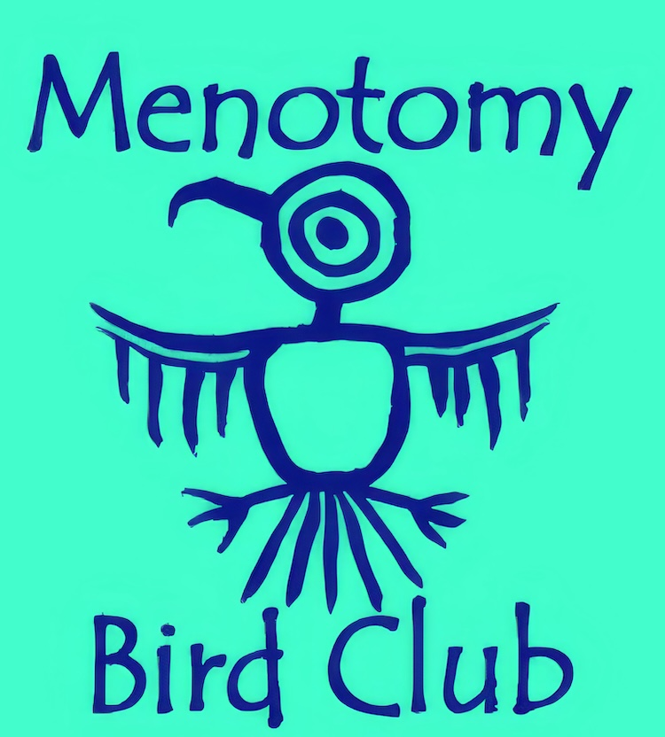
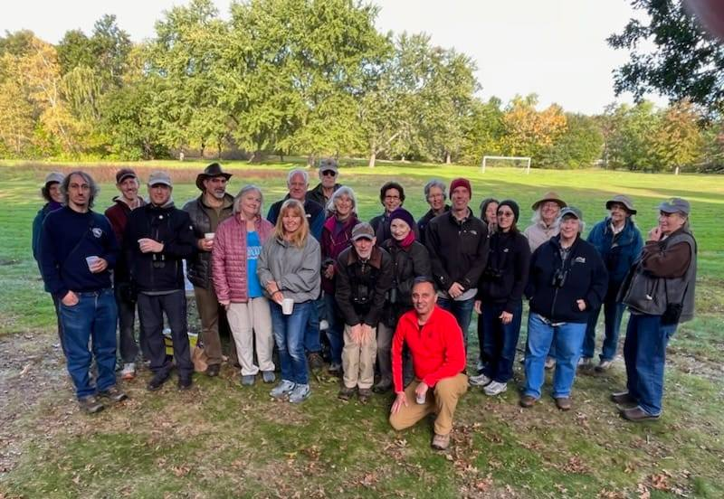

View Upcoming Trips and Events
Welcome to the Menotomy Bird Club! For over 20 years we have organized bird walks and social events for birders of all abilities in the towns of Arlington, Lexington, Medford, Winchester, Woburn and Burlington.
To get our announcements and general birding news please join the Arlington Birds Google Group. Send a blank email to arlingtonbirds@googlegroups.com. If you are already a member and want to see latest conversations click here.
Our website highlights upcoming trips, past trip reports, and a guide to birding in our local area of Arlington, Lexington, Medford, Winchester, Woburn, Cambridge and Burlington. We also link to eBird for recent sightings in our favorite locations.


The club turned 20 years old in 2023. This photo is from a small celebration at Shannon Beach (also called Sandy Beach) last fall.